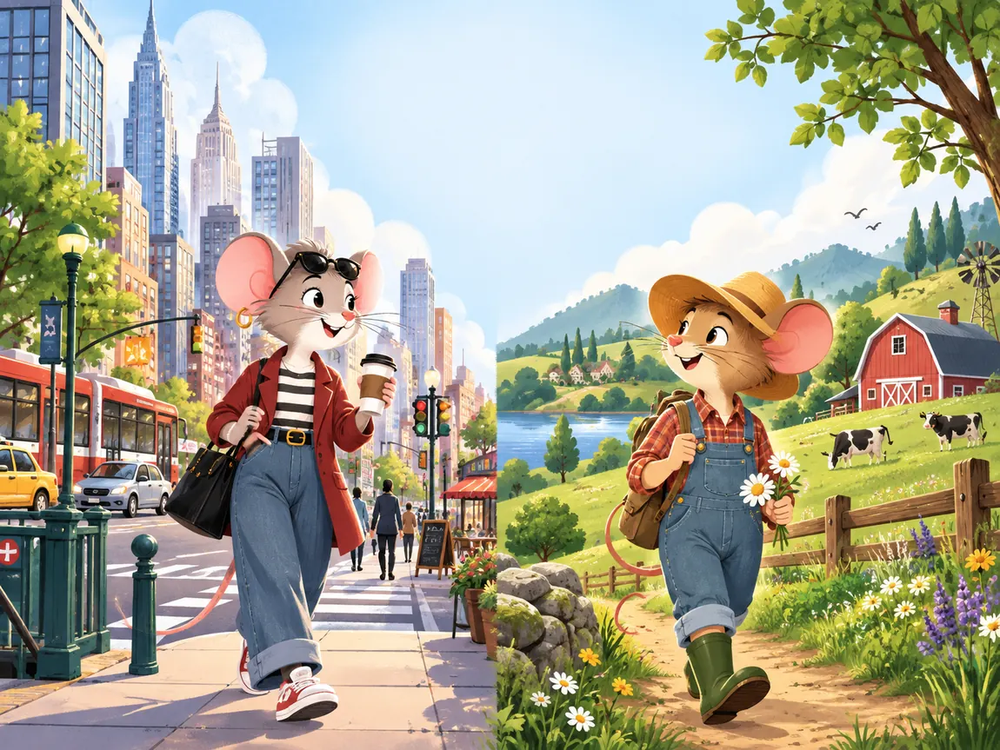
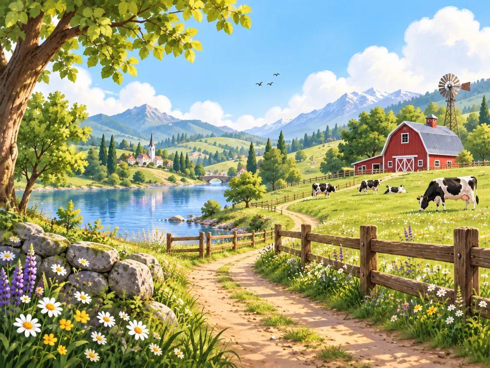
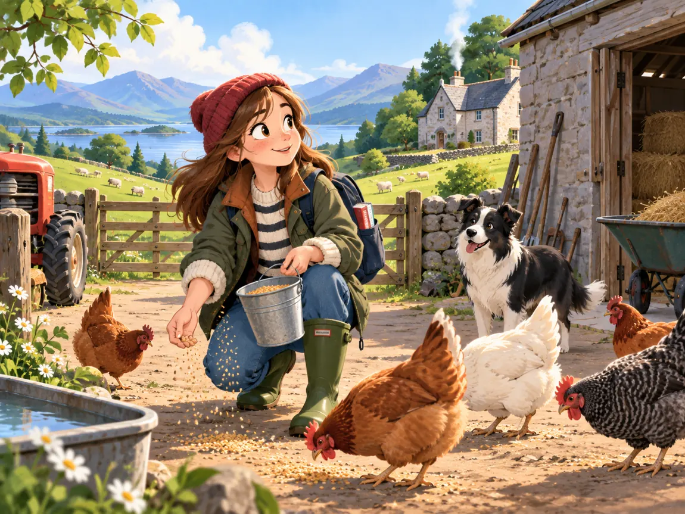
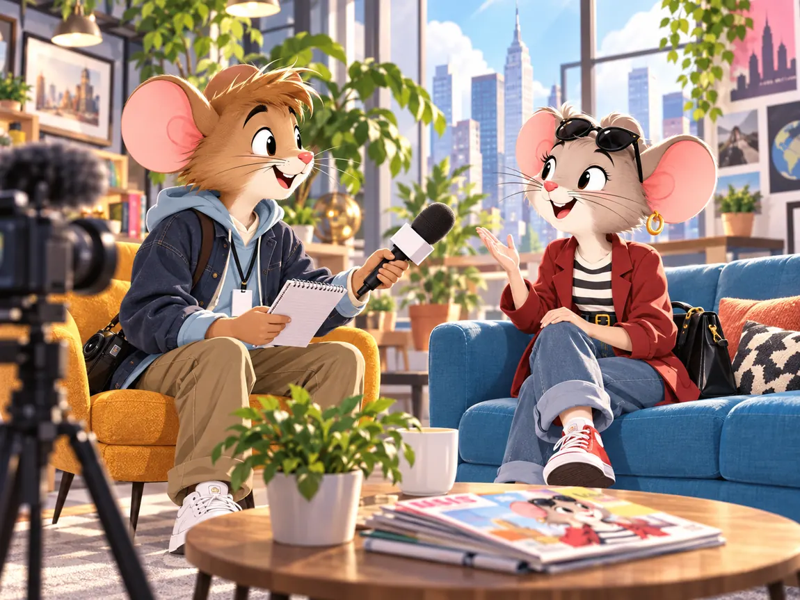
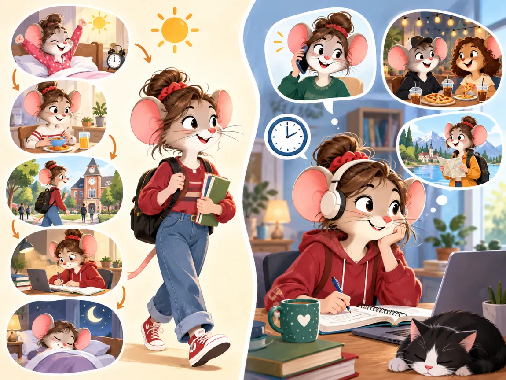
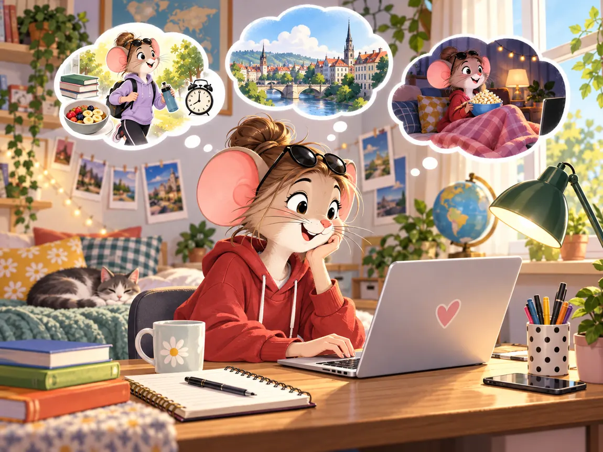

🏙️ CITY
👀SEEI can see…
👂HEARI can hear…
👃SMELLI can smell…
How does it make you feel?

Where would you rather live? Choose a side and explain why.
Compare the two places. Use the prompts, then say how each place makes you feel.

Drag each phrase into CITY, COUNTRY or BOTH. You can move them again if you change your mind.
Choose phrases from the previous task and make personal sentences.
Say one lifestyle thing you can accept.
Choose one thing you really value.
Choose one thing you really dislike.
Before reading, predict what the programme is about.
What could go wrong? Quite a lot, because humans apparently enjoy voluntarily rearranging their lives for television.
Make your prediction before you read the diaries.

Everyone gets up at 5 am because there’s a lot to do on the farm. Sarah’s mum is very nice. She brings me a cup of tea in bed, but I just go back to sleep. Later, I go outside to the farmyard to help Sarah’s family. Today we are milking the cows in the barn and feeding the chickens. The animals are lovely, but I can’t stand the smell.
Sarah’s mum takes me to school every morning. We drive five miles to meet the school bus, which leaves at 7 am. Sarah’s school is very small, but everyone is so friendly.
Learning about farming is interesting, but I’m happy I’m going home tomorrow. The fresh air is nice but it’s too quiet here. I also feel isolated. In the city, the streets are crowded but you have everything close at hand. I miss the shops, my friends and the theatre! I don’t want to leave all my new friends.
Everyone stays in bed late here. It’s 8 am and Annabel’s mum is making breakfast! In the afternoon, we’re going shopping on Oxford Street and then we’re going to the cinema! I’m so excited!
I travel to Annabel’s school by tube. Her school is huge with 1,500 students and the facilities are very interesting and helpful. I’m enjoying the lessons, but most of all I love the facilities. The computer room and the swimming pool are my favourites.
Today, I’m feeling a bit tired. It’s always noisy here and you can hear the traffic all night. I think I’m getting a bit homesick, too. I miss the beautiful landscapes and the people from my hometown. I’m happy I’m going home tomorrow but I’m sure I’ll visit London and see Annabel’s lovely family again!
Choose. If it’s false, correct the sentence aloud.
Click a word, then its meaning. Match all eight.
Choose a girl and a diary entry. The text will appear below. Read it like a radio presenter.
One student is the journalist. The other becomes Annabel or Sarah.

First notice the pattern. Then use the rule.

Click the highlighted verb phrases. Say whether each is Present Simple or Present Continuous.
Everyone gets up at 5 am because there’s a lot to do on the farm. Today we are milking the cows and feeding the chickens. Sarah’s mum takes me to school every morning. I am going home tomorrow.
I travel to Annabel’s school by tube. I am enjoying the lessons. Today I am feeling a bit tired. You can hear the traffic all night. I am getting a bit homesick.
Некоторые глаголы могут стоять и в Present Simple, и в Present Continuous. Всё зависит от того, что именно означает глагол в предложении.
Впиши полную форму глагола. После проверки неправильное поле покажет правильный ответ.
A repeated fact or habit.
A repeated action that annoys the speaker.
Verb → noun with -ment. Then add un- for a negative meaning.
Speak first. Writing becomes much easier once your brain has actually produced the ideas.

Click each sentence to switch its category.
Include where you live, your daily routine, what you are doing these days and what you are doing tonight.
After Annabel and Sarah’s swap, where would you rather live now?